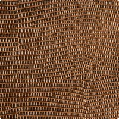
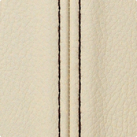
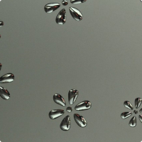

Листовые материалы
Декоративные панели SIBU
- Применение и преимущества декоративных панелей
-
В отделке интерьеров и мебели в последнее время все чаще используются панели декоративного пластика. Они представляют собой прессованные плиты из полистирола, при этом толщина изделий может варьироваться от одного до четырех миллиметров. Такая вариативность позволяет подбирать панели, оптимально соответствующий требованиям в каждом конкретном случае. Декоративный пластик продается в виде панелей стандартных размеров.
Применение декоративных панелей
Одним из ведущих производителей панелей является компания SIBU DESIGN (Австрия)
Панели SIBU DESIGN – пластиковые декоративные панели из полистирола. Размеры панелей 1000x2612, 1000x2000 и 980x980 мм. Панели легко режутся и гнутся, их можно использовать для декоративной финишной отделки помещений.
Пластиковые панели (декоративный пластик) SIBU крепится любым доступным способом. Большинство панелей самоклеящиеся, производятся с клеевым слоем, уже нанесенным на обратную поверхность, это упрощает их использование. Где не хватает длины листа для стыковки, используются декоративные раскладки и профили SIBU. Применение декоративного пластика обеспечивает возможность создания уникального и оригинального дизайна аксессуаров или интерьера.
Панели Sibu нашли широкое применение в мебельном производстве (для отделки изделий) и в декорировании помещений различного назначения: жилых, офисных, административных, торгово-развлекательных.
Панели пользуются популярностью у производителей мебели и дизайнеров.
Декоративный панели SIBU служит для: облицовки фасада кухонных гарнитуров: хорошие эксплуатационные характеристики, удобство работы с материалом и многообразие дизайнов позволяет создавать оригинальные и недорогие модели; Производства различных предметов мебели; Отделки гостиных, спален, прихожих, кухонь, офисных стоек и так далее; Декорирования ванных комнат и других помещений с высокой влажностью воздуха. Многочисленные преимущества декоративных пластиковых панелей позволяют использовать их без каких-либо существенных ограничений.
Преимущества декоративного пластика
Хорошие эксплуатационные характеристики. Декоративные панели SIBU из пластика имеют долгий срок службы, отличаются устойчивостью к внешним воздействиям (в том числе, не выгорают на солнце, хорошо переносят высокую влажность), легко очищаются от загрязнений и не требуют за собой специфичного ухода. Все это делает декоративные панели отделочным материалом, с которым удобно работать; Простота монтажа. Легкость и гибкость панелей гарантируют простоту монтажа. Панели «садятся» на клей или двухсторонний скотч, их можно использовать для отделки поверхностей со сложной формой, разрезая прямо в процессе установки; Широкий ассортимент цветов и фактуры; Привлекательный внешний вид.
http://docs.sibu.at/tl_files/uploads/katalog/SIBU%20World%20RU.pdf
- SIBU profiles(самоклеющиеся)
-
Winkelprofil
Пластиковый декоративный уголок, серебристый, матовый. Подробная информация на официальном сайте www.sibu.at
Наименование Размер мм. Основа Winkelprofil (уголок) 2700х10х5 Самоклеющаяся Z224 Silver pf gloss
Пластиковый декоративный стыковочный профиль, матовый серебристый. Подробная информация на официальном сайте www.sibu.at
Наименование Размер мм. Основа Z224 Silver pf gloss 2700 Самоклеющаяся M50 Silver PF gloss

Пластиковый декоративный гибкий уголок, глянцевый серебристый, минимальный радиус изгиба 150мм. Подробная информация на официальном сайте www.sibu.at
Наименование Размер мм. Основа M50 Silver PF gloss 2700х50 Не самоклеющаяся Z 239 Nero matt
Пластиковый декоративный стыковочный профиль, с вставкой из ПУ - кожи черного цвета. Подробная информация на официальном сайте www.sibu.at
Наименование Размер мм. Основа Z 239 Nero matt 2700 Самоклеющаяся M58 Silver PF met

Пластиковый декоративный завершающий профиль, матовый серебристый. Подробная информация на официальном сайте www.sibu.at
Наименование Размер мм. Основа M58 Silver PF met 2700 Самоклеющаяся M 242 Nero
Пластиковый декоративный завершающий профиль, с вставкой из ПУ - кожи черного цвета. Подробная информация на официальном сайте www.sibu.at
Наименование Размер мм. Основа M 242 Nero 2700 Самоклеющаяся M 239 Bianco matt

Пластиковый декоративный стыковочный профиль, с вставкой из ПУ - кожи белого цвета. Подробная информация на официальном сайте www.sibu.at
Наименование Размер мм. Основа M 239 Bianco matt 2700 Самоклеющаяся M58 Silver PF gloss
Пластиковый декоративный завершающий, глянцевый серебряный. Подробная информация на официальном сайте www.sibu.at
Наименование Размер мм. Основа M58 Silver PF gloss 2700 Самоклеющаяся M 242 Bianco matt
Пластиковый декоративный завершающий профиль, с вставкой из ПУ - кожи белого цвета. Подробная информация на официальном сайте www.sibu.at
Наименование Размер мм. Основа M 242 Bianco matt 2700 Самоклеющаяся Z224 Silver pf met
Пластиковый декоративный стыковочный профиль, матовый серебристый. Подробная информация на официальном сайте www.sibu.at
Наименование Размер мм. Основа Z224 Silver pf met 2700 Самоклеющаяся M50 Silver PF met

Пластиковый декоративный гибкий уголок, матовый серебристый, минимальный радиус изгиба 150мм. Подробная информация на официальном сайте www.sibu.at
Наименование Размер мм. Основа M50 Silver PF met 2700х50 Не самоклеющаяся - SIBU Glass
-
SG SibuGlas YUKON AR

Декоративный пластик SibuGlas AR+, покрытый РММА пластиком устойчивым к истиранию. Подробная информация на официальном сайте www.sibu.at
Наименование Размер мм. Основа SG SibuGlas YUKON AR+ 2600х1000х2,53 Самоклеющаяся SG SibuGlas PEARL RAY Gold AR

Декоративный пластик SibuGlas AR+, покрытый РММА пластиком устойчивым к истиранию. Подробная информация на официальном сайте www.sibu.at
Наименование Размер мм. Основа SG SibuGlas PEARL RAY Gold AR 2600х1000х3,03 Самоклеющаяся SG SibuGlas Cocktail Saphire AR

Декоративный пластик SibuGlas AR+, покрытый РММА пластиком устойчивым к истиранию. Подробная информация на официальном сайте www.sibu.at
Наименование Размер мм. Основа SG SibuGlas Cocktail Saphire AR 2600х1000х3,43 Не самоклеющаяся SG Vintage copper AR
Декоративный пластик SibuGlas AR+, покрытый РММА пластиком устойчивым к истиранию. Подробная информация на официальном сайте www.sibu.at
Наименование Размер мм. Основа SG Vintage copper AR 2600х1000х2,93 Самоклеющаяся SG SibuGlas Leguan silver AR

Декоративный пластик SibuGlas AR+, покрытый РММА пластиком устойчивым к истиранию. Подробная информация на официальном сайте www.sibu.at
Наименование Размер мм. Основа SG SibuGlas Leguan silver AR 2600х1000х2,93 Самоклеющаяся - SIBU Leather-line(самоклеющиеся)
-
Линия Leather-Line - это приятный на ощупь, дающий ощущение уюта и тепла, материал для новых дизайнерских решений. Гениальные дизайнеры компании создали фактуры на любой вкус и цвет: с цветочным рельефным орнаментом, с имитацией кожи игуаны, крокодила и страуса, стеганая кожа в стиле Coco Chanel, - и все это в мягком кожаном исполнении. К таким панелям приятно прикасаться, за ними легко ухаживать, но главное - они способны преобразить любой интерьер, сделать его намного более уютным, стильным и необычным. Созданием линии Leather-Line фирма SIBU Design еще раз подтвердила свою репутацию экcперта в области дизайна, продемонстрировав принципиально новую коллекцию продукции: полноформатные панели с поверхностью из кожзаменителя различных цветов и фактур, с отделкой под кожу игуаны, крокодила и страуса. Элегантные и современные панели с растительным орнаментом, а также "черно-белая" коллекция полностью вписываются в современный тренд моды.
LL FLORAL White/Silver matt

Декоративный пластик с покрытием из ПУ кожи. Подробная информация на официальном сайте www.sibu.at
Наименование Размер мм. Основа LL FLORAL White/Silver matt 2612х1000х2,7 Самоклеющаяся LL Pelo Savanna
Декоративный пластик с покрытием из ПУ кожи. Подробная информация на официальном сайте www.sibu.at
Наименование Размер мм. Основа LL Pelo Savanna 2612х1000х1,8 Самоклеющаяся LL Dark Brown ZN 200 / Beige
Декоративный пластик покрытый ПУ кожей. Подробная информация на официальном сайте www.sibu.at
Наименование Размер мм. Основа LL Dark Brown ZN 200 / Beige 2612х1000х2,8 Самоклеющаяся LL Croco black

Декоративный пластик покрытый ПУ-кожей. Подробная информация на официальном сайте www.sibu.at
Наименование Размер мм. Основа LL Croco black 2600х1000х1,6 Самоклеющаяся LL Leguan nero
Декоративный пластик с покрытием из ПУ кожи. Подробная информация на официальном сайте www.sibu.at
Наименование Размер мм. Основа LL Leguan nero 2612х1000х1.63 Самоклеющаяся LL Croco uni magenta
Декоративный пластик покрытый ПУ кожей. Подробная информация на официальном сайте www.sibu.at
Наименование Размер мм. Основа LL Croco uni magenta 2612х1000х2,8 Самоклеющаяся LL Floral White
Декоративный пластик покрытый ПУ кожей. Подробная информация на официальном сайте www.sibu.at
Наименование Размер мм. Основа LL Floral White 2600х1000х1,6 Самоклеющаяся LL Leguan Gold
Декоративный пластик покрытый ПУ кожей. Подробная информация на официальном сайте www.sibu.at
Наименование Размер мм. Основа LL Leguan Gold 2612х1000х2,8 Самоклеющаяся LL Croco creme

Декоративный пластик покрытый ПУ кожей. Подробная информация на официальном сайте www.sibu.at
Наименование Размер мм. Основа LL Croco creme 2612х1000х2,8 Самоклеющаяся LL Floral red

Декоративный пластик покрытый ПУ кожей. Подробная информация на официальном сайте www.sibu.at
Наименование Размер мм. Основа LL Floral red 2600х1000х1,6 Самоклеющаяся LL Leguan Copper
Декоративный пластик покрытый ПУ кожей. Подробная информация на официальном сайте www.sibu.at
Наименование Размер мм. Основа LL Leguan Copper 2612х1000х2,8 Самоклеющаяся LL Crepa Nero
Декоративный пластик покрытый ПУ кожей. Подробная информация на официальном сайте www.sibu.at
Наименование Размер мм. Основа LL Leguan Copper 2600х1000х1,6 Самоклеющаяся LL STRUZZO Dark Brown

Декоративный пластик покрытый ПУ кожей. Подробная информация на официальном сайте www.sibu.at
Наименование Размер мм. Основа LL STRUZZO Dark Brown 2612х1000х2,8 Самоклеющаяся LL Imperial white/silver
Декоративный пластик покрытый ПУ кожей. Подробная информация на официальном сайте www.sibu.at
Наименование Размер мм. Основа LL Imperial white/silver 2612х1000х2,8 Самоклеющаяся LL Creme ZN 200 / Brown
Декоративный пластик покрытый ПУ кожей. Подробная информация на официальном сайте www.sibu.at
Наименование Размер мм. Основа LL Creme ZN 200 / Brown 2600х1000х1,6 Самоклеющаяся LL STRUZZO Creme

Декоративный пластик покрытый ПУ кожей. Подробная информация на официальном сайте www.sibu.at
Наименование Размер мм. Основа LL STRUZZO Creme 2612х1000х2,8 Самоклеющаяся LL Floral White / Gold mat
Декоративный пластик покрытый ПУ кожей. Подробная информация на официальном сайте www.sibu.at
Наименование Размер мм. Основа LL Floral White / Gold mat 2612х1000х2,8 Самоклеющаяся CR Cristal Rombo 85 bianco mat/silver

Декоративный пластик покрытый ПУ кожей. Подробная информация на официальном сайте www.sibu.at
Наименование Размер мм. Основа CR Cristal Rombo 85 bianco mat/silver 2600х1000х1,6 Самоклеющаяся LL Reggae
Декоративный пластик покрытый ПУ кожей. Подробная информация на официальном сайте www.sibu.at
Наименование Размер мм. Основа LL Reggae 2612х1000х1,2 Самоклеющаяся LL Floral Black / Silver mat
Декоративный пластик покрытый ПУ кожей. Подробная информация на официальном сайте www.sibu.at
Наименование Размер мм. Основа LL Floral Black / Silver mat 2612х1000х2,8 Самоклеющаяся CR Cristal rombo 85 nero/silver
Декоративный пластик покрытый ПУ кожей. Подробная информация на официальном сайте www.sibu.at
Наименование Размер мм. Основа CR Cristal rombo 85 nero/silver 2600х1000х1,6 Самоклеющаяся LL Quadro Creme

Декоративный пластик покрытый ПУ кожей. Подробная информация на официальном сайте www.sibu.at
Наименование Размер мм. Основа LL Quadro Creme 2612х1000х4,5 Самоклеющаяся LL Floral Black
Декоративный пластик покрытый ПУ кожей. Подробная информация на официальном сайте www.sibu.at
Наименование Размер мм. Основа LL Floral Black 2612х1000х2,8 Самоклеющаяся CR Cristal Collier bianco mat/silver
Декоративный пластик покрытый ПУ кожей. Подробная информация на официальном сайте www.sibu.at
Наименование Размер мм. Основа CR Cristal Collier bianco mat/silver 2600х1000х1,6 Самоклеющаяся - SIBU Punch-line 3D(самоклеющиеся)
-
3D H-8-30-30 lapis PF met-Silver
Декоративный пластик с эффектом 3D. Подробная информация на официальном сайте www.sibu.at
Наименование Размер мм. Основа 3D H-8-30-30 lapis PF met-Silver 2612х1000х1,2 Самоклеющаяся 3D H-8-30-30 HGS/Silver
Декоративный пластик с эффектом 3D. Подробная информация на официальном сайте www.sibu.at
Наименование Размер мм. Основа 3D H-8-30-30 HGS/Silver 2612х1000х1,2 Самоклеющаяся 3D Q 10-40-40 Silver PF met/Silver
Декоративный пластик с эффектом 3D. Подробная информация на официальном сайте www.sibu.at
Наименование Размер мм. Основа 3D Q 10-40-40 Silver PF met/Silver 2612х1000х1,2 Самоклеющаяся 3D Flowers Silver PF met-Silver
Декоративный пластик с эффектом 3D. Подробная информация на официальном сайте www.sibu.at
Наименование Размер мм. Основа 3D Flowers Silver PF met-Silver 2612х1000х1,2 Самоклеющаяся 3D Q5-15-15 Silver PF met/Silver
Декоративный пластик с эффектом 3D. Подробная информация на официальном сайте www.sibu.at
Наименование Размер мм. Основа 3D Q5-15-15 Silver PF met/Silver 2612х1000х1,2 Самоклеющаяся 3D Q 10-40-40 Silver PF met/Blue
Декоративный пластик с эффектом 3D. Подробная информация на официальном сайте www.sibu.at
Наименование Размер мм. Основа 3D Q 10-40-40 Silver PF met/Blue 2612х1000х1,2 Самоклеющаяся 3D Chess Titan Brushed-blue
Декоративный пластик с эффектом 3D. Подробная информация на официальном сайте www.sibu.at
Наименование Размер мм. Основа 3D Chess Titan Brushed-blue 2612х1000х1,2 Самоклеющаяся 3D Q 10-40-40 Silver PF met touch/Silver
Декоративный пластик с эффектом 3D. Подробная информация на официальном сайте www.sibu.at
Наименование Размер мм. Основа 3D Q 10-40-40 Silver PF met touch/Silver 2612х1000х1,2 Самоклеющаяся 3D H8-30-30 Silver PF met/Silver
Декоративный пластик с эффектом 3D. Подробная информация на официальном сайте www.sibu.at
Наименование Размер мм. Основа 3D H8-30-30 Silver PF met/Silver 2612х1000х1,2 Самоклеющаяся Q10-40-40 Silver PF met

Декоративный пластик с эффектом 3D. Подробная информация на официальном сайте www.sibu.at
Наименование Размер мм. Основа Q10-40-40 Silver PF met 2612х1000х1,2 Самоклеющаяся - SIBU Punch-line(не самоклеющиеся)
-
Punch-Line – перфорированные декоративные панели SIBU Design с круглой или квадратной перфорацией. Предназначены для универсального использования при оформлении интерьеров и в мебельном производстве. Незначительный вес, простота раскроя, возможность быстрой обработки на месте установки - все эти качества повторяются в серии SIBU Punch-line.
H5-15-15 Silver PF met

Декоративный перфорированный пластик. Подробная информация на официальном сайте www.sibu.at
Наименование Размер мм. Основа H5-15-15 Silver PF met 2600х1000х1 Самоклеющаяся Q5-15-15 Silver PF met

Декоративный перфорированный пластик. Подробная информация на официальном сайте www.sibu.at
Наименование Размер мм. Основа Q5-15-15 Silver PF met 2600х1000х1 Самоклеющаяся H8-30-30 Silver PF met

Декоративный перфорированный пластик. Подробная информация на официальном сайте www.sibu.at
Наименование Размер мм. Основа H8-30-30 Silver PF met 2600х1000х1 Самоклеющаяся Q10-40-40 Silver PF met
Декоративный перфорированный пластик. Подробная информация на официальном сайте www.sibu.at
Наименование Размер мм. Основа Q10-40-40 Silver PF met 2600х1000х1 Самоклеющаяся Q5-15-15 Titan brushed
Декоративный перфорированный пластик. Подробная информация на официальном сайте www.sibu.at
Наименование Размер мм. Основа Q5-15-15 Titan brushed 2600х1000х1 Самоклеющаяся - SIBU Structure-line(самоклеющиеся)
-
Structure-Line - это серия синтетических текстурных декоративных панелей со специальным покрытием производства компании SIBU Design. Их многообразие даёт возможность создавать стильные дизайнерские композиции. Текстурные панели Structure-Line используются в оформлении интерьеров и мебельных фасадов, в качестве аппликаций, заполнений, накладок и пр. Они также прекрасно применимы при изготовлении декоративных ширм и разделительных перегородок. Стандартная программа Structure-Line включает большое разнообразие текстур (Square, Pyramid, Wave, Sinus, Step, Globe) и цветов (серебристый, золотой, стальной, алюминиевый, мятный, синий, цвета под дерево). Новая уникальная разработка данной серии – это двухцветные текстурные листы с комбинированными цветами Серебро/Золото, Темно-синий металлик/Серебро, Алюминий/ Серебро. Современный вид, быстрая и простая обработка непосредственно во время установки панелей - несомненные преимущества материалов Structure-Line.
Grass Champagner pf met
Рельефный декоративный пластик. Подробная информация на официальном сайте www.sibu.at
Наименование Размер мм. Основа Grass Champagner pf met 2612х1000х1,2 Самоклеющаяся Step 5 Silver PF met/Silver
Рельефный декоративный пластик. Подробная информация на официальном сайте www.sibu.at
Наименование Размер мм. Основа Step 5 Silver PF met/Silver 2612х1000х1,2 Самоклеющаяся Bubble orange PF/silver
Рельефный декоративный пластик. Подробная информация на официальном сайте www.sibu.at
Наименование Размер мм. Основа Bubble orange PF/silver 2612х1000х1,2 Самоклеющаяся Globe 18-50 HGS
Рельефный декоративный пластик. Подробная информация на официальном сайте www.sibu.at
Наименование Размер мм. Основа Globe 18-50 HGS 2612х1000х1,2 Самоклеющаяся IMPERIAL Vintage Black
Рельефный декоративный пластик. Подробная информация на официальном сайте www.sibu.at
Наименование Размер мм. Основа IMPERIAL Vintage Black 2612х1000х1,2 Самоклеющаяся ALISE Vintage Copper
Рельефный декоративный пластик. Подробная информация на официальном сайте www.sibu.at
Наименование Размер мм. Основа ALISE Vintage Copper 2612х1000х1,2 Самоклеющаяся Carre Silver PF met
Рельефный декоративный пластик. Подробная информация на официальном сайте www.sibu.at
Наименование Размер мм. Основа Carre Silver PF met 2612х1000х1,2 Самоклеющаяся Dakota Copper
Рельефный декоративный пластик. Подробная информация на официальном сайте www.sibu.at
Наименование Размер мм. Основа Dakota Copper 2612х1000х1,2 Самоклеющаяся Wave 1 silver PF met
Рельефный декоративный пластик. Подробная информация на официальном сайте www.sibu.at
Наименование Размер мм. Основа Wave 1 silver PF met 2612х1000х1,2 Самоклеющаяся Croco smoke PF met/silver
Рельефный декоративный пластик. Подробная информация на официальном сайте www.sibu.at
Наименование Размер мм. Основа Croco smoke PF met/silver 2612х1000х1,2 Самоклеющаяся - SIBU DECO-LINE(самоклеющиеся)
-
Deco-Line - это базовая линия декоративных панелей фирмы Sibu Design, которая производится из ударопрочного полистирола со специально обработанной поверхностью. Данная серия является основой для большинства других дизайнов компании. SIBU Deco-Line включает большое число высококачественных поверхностей с бриллиантовым, зеркальным или металлизированным внешним видом, шлифованных в серебряных, золотых и антрацитовых тонах, в модных цветах под металл и с очень актуальными древесными текстурами. Панели SIBU Deco-Line разработаны специально для применения внутри помещений и могут практически неограниченно использоваться везде, за исключением рабочих поверхностей и напольных покрытий.
Zebrano touch
Декоративный пластик с покрытием под натуральное дерево. Подробная информация на официальном сайте www.sibu.at
Наименование Размер мм. Основа Zebrano touch 2612х1000х1,2 Самоклеющаяся DM OAK TREE Light (НОВИНКА)
Декоративный пластик с покрытием под натуральное дерево. Подробная информация на официальном сайте www.sibu.at
Наименование Размер мм. Основа DM OAK TREE Light (НОВИНКА) 2612х1000х1,2 Самоклеющаяся HGS
Декоративный пластик с матовым покрытием под серебро. Подробная информация на официальном сайте www.sibu.at
Наименование Размер мм. Основа HGS 2612х1000х1,2 Самоклеющаяся Silver PF met
Декоративный пластик с матовой поверхностью под серебро. Подробная информация на официальном сайте www.sibu.at
Наименование Размер мм. Основа Silver PF met 2612х1000х1,2 Самоклеющаяся DM OAK TREE Dark (НОВИНКА)
Декоративный пластик с покрытием под натуральное дерево
Наименование Размер мм. Основа DM OAK TREE Dark (НОВИНКА) 2612х1000х1,2 Самоклеющаяся DM Fleur Silver/Brown (НОВИНКА)
Декоративный пластик с гладким ровным покрытием. Подробная информация на официальном сайте www.sibu.at
Наименование Размер мм. Основа DM Fleur Silver/Brown (НОВИНКА) 2612х1000х1,2 Самоклеющаяся Silver brushed
Декоративный пластик с матовой поверхностью под серебро. Подробная информация на официальном сайте www.sibu.at
Наименование Размер мм. Основа Silver brushed 2612х1000х1,2 Самоклеющаяся Makassar touch 1
Декоративный пластик с покрытием под натуральное дерево. Подробная информация на официальном сайте www.sibu.at
Наименование Размер мм. Основа Makassar touch 1 2612х1000х1,2 Самоклеющаяся DM MONSOON Vintage Brown glatt
Декоративный пластик с гладким ровным покрытием. Подробная информация на официальном сайте www.sibu.at
Наименование Размер мм. Основа DM MONSOON Vintage Brown glatt 2612х1000х1,2 Самоклеющаяся - SIBU DECO-LINE(не самоклеющиеся)
-
Deco-Line - это базовая линия декоративных панелей фирмы Sibu Design, которая производится из ударопрочного полистирола со специально обработанной поверхностью. Данная серия является основой для большинства других дизайнов компании. SIBU Deco-Line включает большое число высококачественных поверхностей с бриллиантовым, зеркальным или металлизированным внешним видом, шлифованных в серебряных, золотых и антрацитовых тонах, в модных цветах под металл и с очень актуальными древесными текстурами. Панели SIBU Deco-Line разработаны специально для применения внутри помещений и могут практически неограниченно использоваться везде, за исключением рабочих поверхностей и напольных покрытий.
Fashion Red
Декоративный пластик с зеркальным покрытием красного цвета. Подробная информация на официальном сайте www.sibu.at
Наименование Размер мм. Основа Fashion Red 2612х1000х1,2 Самоклеющаяся Mint
Декоративный пластик с зеркальным покрытием ментолового цвета. Подробная информация на официальном сайте www.sibu.at
Наименование Размер мм. Основа Mint 2600х1000х1 Не самоклеющаяся Brass
Декоративный пластик с зеркальным покрытием светло золотого цвета. Подробная информация на официальном сайте www.sibu.at
Наименование Размер мм. Основа Brass 2600х1000х1 Не самоклеющаяся Fashion grey
Декоративный пластик с зеркальным покрытием серого цвета. Подробная информация на официальном сайте www.sibu.at
Наименование Размер мм. Основа Fashion grey 2612х1000х1,2 Не самоклеющаяся Iceblue
Декоративный пластик с зеркальным покрытием голубого цвета, Подробная информация на официальном сайте www.sibu.at
Наименование Размер мм. Основа Iceblue 2612х1000х1,2 Не самоклеющаяся Antracite
Декоративный пластик с зеркальным покрытием цвет антрацит, Подробная информация на официальном сайте www.sibu.at
Наименование Размер мм. Основа Antracite 2000х1000х1 Не самоклеющаяся Skyblue
Декоративный пластик с зеркальным покрытием синего цвета. Подробная информация на официальном сайте www.sibu.at
Наименование Размер мм. Основа Skyblue 2612х1000х1 Не самоклеющаяся Gold
Декоративный пластик с зеркальным покрытием золотого цвета. Подробная информация на официальном сайте www.sibu.at
Наименование Размер мм. Основа Gold 2000х1000х1 Не самоклеющаяся Silver
Декоративный пластик с зеркальным покрытием серебряного цвета. Подробная информация на официальном сайте www.sibu.at
Наименование Размер мм. Основа Silver 2000х1000х1 Не самоклеющаяся - SIBU Multistyle(самоклеющиеся)
-
Линия Multistyle – это успешное воплощение новаторской идеи компании SIBU Design. Данная серия представляет собой гибкие панели, полученные путем надсечения панелей SIBU Deco-Line на квадраты, прямоугольники или параллельно расположенные полосы. Панели Multistyle имеют благородную и очень гибкую поверхность, которая идеально подходит для оформления колонн, скруглений с небольшими радиусами, а также для арок и плоских поверхностей. Многообразие дизайнов (зеркальные, золотые, серебряные, стальные, с фактурой под дерево), а также самоклеющаяся основа панелей делают серию Multistyle очень удобным и эффективным средством в работе дизайнера.
White Multistyle 5x5
Гибкий декоративный пластик с мозаичным покрытием белого цвета. Подробная информация на официальном сайте www.sibu.at
Наименование Размер мм. Основа White Multistyle 5x5 980х980х1,2 Самоклеющаяся Rombus Silver Multistil 30/3x30/3
Гибкий декоративный пластик с мозаичным покрытием белого цвета. Подробная информация на официальном сайте www.sibu.at
Наименование Размер мм. Основа Rombus Silver Multistil 30/3x30/3 2600х1000х1,2 Самоклеющаяся Gold Multistyle 5x5
Гибкий декоративный пластик с мозаичным зеркальным покрытием золотого цвета. Подробная информация на официальном сайте www.sibu.at
Наименование Размер мм. Основа Gold Multistyle 5x5 980х980х1,2 Самоклеющаяся Silver Multistyle 10
Гибкий декоративный пластик с мозаичным зеркальным покрытием серебристого цвета. Подробная информация на официальном сайте www.sibu.at
Наименование Размер мм. Основа Silver Multistyle 10 980х980х1,2 Самоклеющаяся Silver Multistyle 5x5
Гибкий декоративный пластик с мозаичным зеркальным покрытием серебристого цвета. Подробная информация на официальном сайте www.sibu.at
Наименование Размер мм. Основа Silver Multistyle 5x5 980х980х1,2 Самоклеющаяся Gold Multistyle 10x10
Гибкий декоративный пластик с мозаичным зеркальным покрытием золотого цвета. Подробная информация на официальном сайте www.sibu.at
Наименование Размер мм. Основа Gold Multistyle 10x10 980х980х1,2 Самоклеющаяся Red Multistyle 5x5
Гибкий декоративный пластик с мозаичным покрытием красного цвета. Подробная информация на официальном сайте www.sibu.at
Наименование Размер мм. Основа Red Multistyle 5x5 980х980х1,2 Самоклеющаяся Silver Multistyle 10x10
Гибкий декоративный пластик с мозаичным зеркальным покрытием серебристого цвета. Подробная информация на официальном сайте www.sibu.at
Наименование Размер мм. Основа Silver Multistyle 10x10 980х980х1,2 Самоклеющаяся Fashion Grey Multistil 5x5
Гибкий декоративный пластик с мозаичным зеркальным покрытием серого цвета. Подробная информация на официальном сайте www.sibu.at
Наименование Размер мм. Основа Fashion Grey Multistil 5x5 980х980х1,2 Самоклеющаяся Iceblue Multistyle 5x5
Гибкий декоративный пластик с мозаичным зеркальным покрытием голубого цвета. Подробная информация на официальном сайте www.sibu.at
Наименование Размер мм. Основа Iceblue Multistyle 5x5 980х980х1,2 Самоклеющаяся Magic Black Multistil 5x5
Гибкий декоративный пластик с мозаичным покрытием черного цвета. Подробная информация на официальном сайте www.sibu.at
Наименование Размер мм. Основа Magic Black Multistil 5x5 980х980х1,2 Самоклеющаяся Antracite Multistyle 5x5

Гибкий декоративный пластик с мозаичным зеркальным покрытием, цвет антрацит. Подробная информация на официальном сайте www.sibu.at
Наименование Размер мм. Основа Antracite Multistyle 5x5 980х980х1,2 Самоклеющаяся Gold Multistyle 10
Гибкий декоративный пластик с мозаичным зеркальным покрытием золотого цвета. Подробная информация на официальном сайте www.sibu.at
Наименование Размер мм. Основа Gold Multistyle 10 980х980х1,2 Самоклеющаяся Iceblue Multistyle 10x10
Гибкий декоративный пластик с мозаичным зеркальным покрытием голубого цвета. Подробная информация на официальном сайте www.sibu.at
Наименование Размер мм. Основа Iceblue Multistyle 10x10 980х980х1,2 Самоклеющаяся - SIBU ACRYLIC-LINE
-
AC MOTION TWO Red
Рельефные высокоглянцевые поверхности из высококачественного ABS/PMMA устойчивые к истиранию. Подробная информация на официальном сайте www.sibu.at
Наименование Размер мм. AC MOTION TWO Red 2600x1000x1,2 AC MOTION TWO Black
Рельефные высокоглянцевые поверхности из высококачественного ABS/PMMA устойчивые к истиранию. Подробная информация на официальном сайте www.sibu.at
Наименование Размер мм. AC MOTION TWO Black 2600x1000x1,2 AC MOTION TWO White
Рельефные высокоглянцевые поверхности из высококачественного ABS/PMMA устойчивые к истиранию. Подробная информация на официальном сайте www.sibu.at
Наименование Размер мм. AC MOTION TWO White 2600x1000x1,2